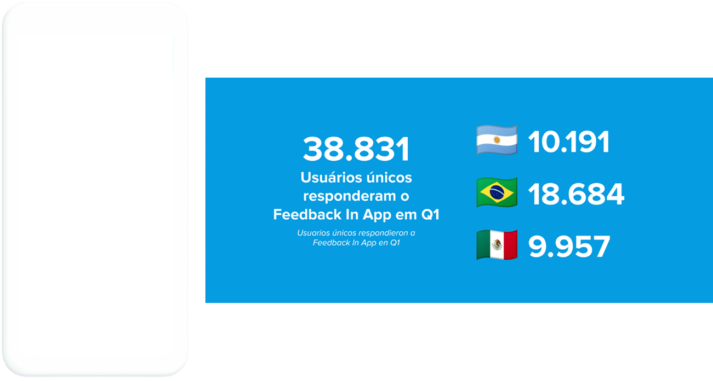
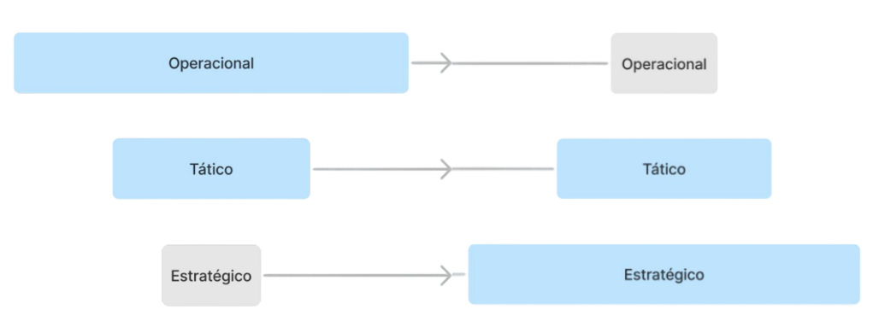
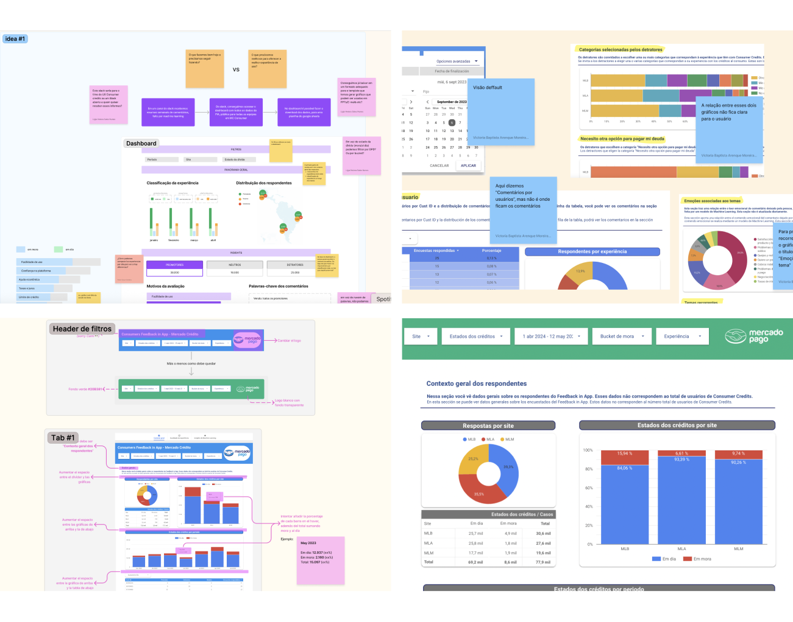
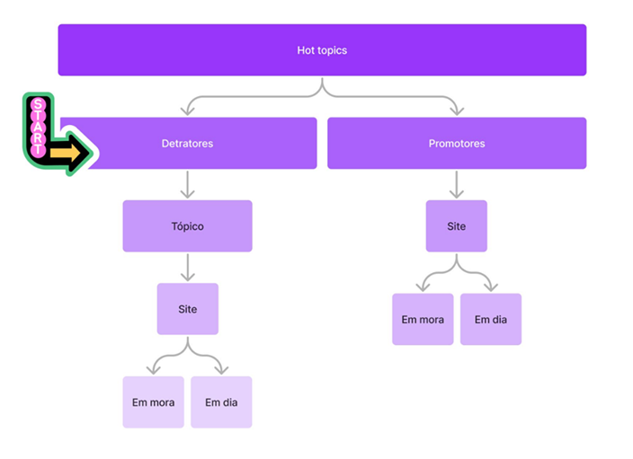

2024
From a new offer to a complete redesign
Mercado Pago
UX STRATEGY · PROBLEM FRAMING · INFORMATION ARCHITECTURE
HI THERE!
Victoria designs complex products at the intersection of user needs, data, and business constraints. With experience in fintech, proptech, and B2B SaaS, she partners closely with product and engineering teams to shape scalable solutions that enable better decisions and drive meaningful business outcomes.

The Secretariat team was juggling three systems plus spreadsheets just to manage leads due to a systems integration process, since this team was part of a company that was acquired by QuintoAndar.
Build a centralized tool tailored to their needs, based on how they already worked—and how they wanted to work.
In just 12 weeks, we designed and released a custom CRM from scratch for the Sales Secretariat team. The project aimed to replace fragmented tools with a more integrated system and improve their daily productivity. It was a user-centered, design-led effort, built on solid prior research and strong team alignment.
Keep it simple. Keep it familiar. Integrate what matters.
We completed the delivery of the first version with at least 5 end-game features in the backlog.
A quick demonstration of navigation in the first version of the CRM prototype’s, before the official release.

Part of the CRM handoff from the sales department of QuintoAndar, including behavior specifications and some redlines to front-end devs.

Proved my value and built trust as the solo designer after the previous senior left
The manual analysis process of the FIA (always-on survey for Individual Consumers) was inefficient. It required 11 days of UX work, limited the analysis to samples of detractors, and fragmented the work across multiple tools, delaying decisions.
Scale access to and analysis of FIA data to:
Starting in 2024, the team no longer had dedicated resources for the quarterly analysis of the FIA, as the data is automated and accessible to the entire team at all times. The focus shifted to investigating underlying causes (e.g., what turns promoters into detractors).

Our survey collected over 30,000 responses every 3 months from users in Argentina, Brazil, and Mexico.
The UX team from Mercado Pago’s Collections automated the analysis of the Feedback in app survey in collaboration with the data science team, enhancing our dashboard with artificial intelligence. The goal was to transform the data analysis—previously manual and time-consuming—into an agile and strategic process. The result was the creation of a dashboard in Looker that uses machine learning (NLP — BERT) to classify and analyze user comments in real time.

The overall goal of the delivery was to reduce the operational burden on the team and increase the strategic influence of UX in prioritizing initiatives.

The development of the Dashboard followed an agile collaboration, culminating in a solution in Looker:
The experiment with Notion’s AI in Q2/2023 demonstrated the feasibility of a general and quick analysis of comments, validating the approach for developing the permanent ML solution. This proof of concept was crucial for the investment decision in full automation.

The data analysis flow with Notion went from macro to micro, with methods to evaluate the consistency of AI responses.